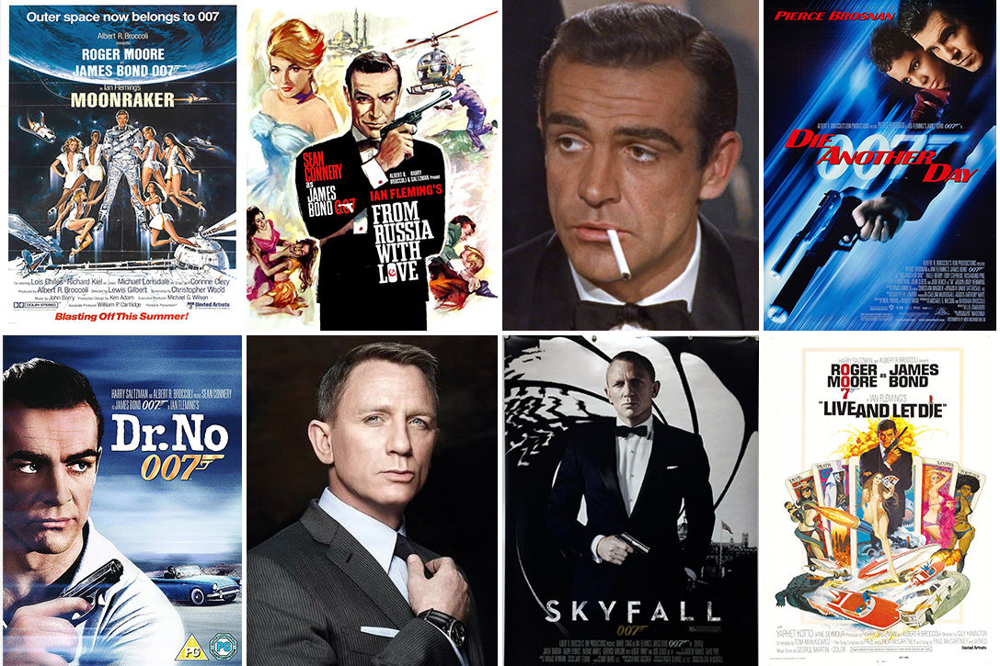
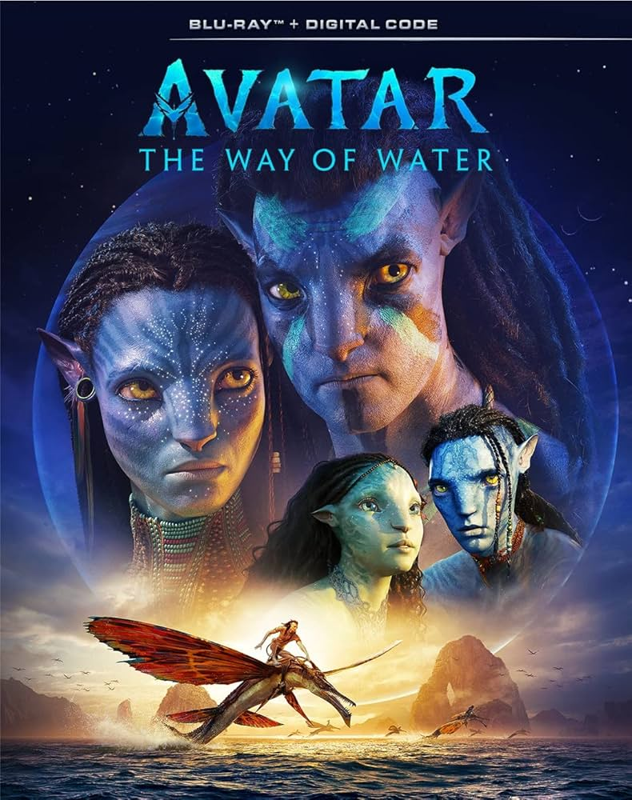
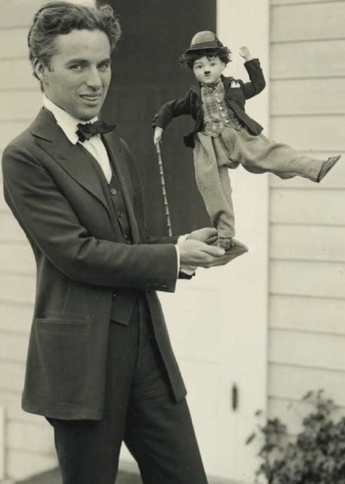
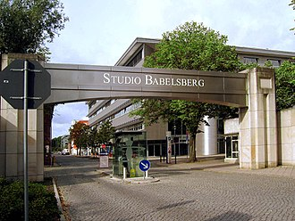

The history of film chronicles the development of a visual art
form created using film technologies that
began in the late 19th century.
The advent of film as an artistic medium is not clearly defined. There were earlier cinematographic
screenings by others, however, the commercial, public screening of ten Lumière brothers' short films in
Paris on 28 December 1895, can be regarded as the breakthrough of projected cinematographic motion pictures.
The earliest films were in black and white, under a minute long, without recorded sound, and consisted of a
single shot from a steady camera. The first decade saw film move from a novelty, to an established mass
entertainment industry, with film production companies and studios established throughout the world.
Conventions toward a general cinematic language developed, with film editing, camera movements and other
cinematic techniques contributing specific roles in the narrative of films.
Popular new media, including television (mainstream since the 1950s), home video (1980s), and the internet
(1990s), influenced the distribution and consumption of films. Film production usually responded with
content to fit the new media, and technical innovations (including widescreen (1950s), 3D, and 4D film) and
more spectacular films to keep theatrical screenings attractive. Systems that were cheaper and more easily
handled (including 8mm film, video, and smartphone cameras) allowed for an increasing number of people to
create films of varying qualities, for any purpose including home movies and video art. The technical
quality was usually lower than professional movies, but improved with digital video and affordable,
high-quality digital cameras. Improving over time, digital production methods became more popular during the
1990s, resulting in increasingly realistic visual effects and popular feature-length computer animations.
Various film genres have emerged during the history of film, and enjoyed variable degrees of success.
| Film Series in the World |
| Series Name |
Creator |
First Release |
Key Films |
Image |
| Star Wars |
George Lucas |
Star Wars: Episode IV – A New Hope (1977) |
- Original Trilogy: Episodes IV-VI (1977-1983)
- Prequel Trilogy: Episodes I-III (1999-2005)
- Sequel Trilogy: Episodes VII-IX (2015-2019)
- Anthology Films: Rogue One (2016), Solo (2018)
|
|
| Harry Potter / Wizarding World |
J.K. Rowling |
Harry Potter and the Sorcerer's Stone (2001) |
- Harry Potter Series: Harry Potter 1-8 (2001-2011)
- Fantastic Beasts Series: Fantastic Beasts and Where to Find Them (2016), The Crimes of
Grindelwald (2018), The Secrets of Dumbledore (2022)
|
 |
]
| James Bond |
Ian Fleming |
Dr. No (1962) |
- Iconic Actors: Sean Connery, Roger Moore, Timothy Dalton, Pierce Brosnan, Daniel Craig
|
 |
| The Lord of the Rings / The Hobbit |
J.R.R. Tolkien |
The Lord of the Rings: The Fellowship of the Ring (2001) |
- The Lord of the Rings Trilogy: Fellowship of the Ring, Two Towers, Return of the King
(2001-2003)
- The Hobbit Trilogy: An Unexpected Journey, The Desolation of Smaug, The Battle of the Five
Armies (2012-2014)
|
 |
| Marvel Cinematic Universe (MCU) |
Marvel Studios (Kevin Feige as President) |
Iron Man (2008) |
- Iron Man (2008)
Director: Jon Favreau
Synopsis: Billionaire inventor Tony Stark becomes Iron Man after being kidnapped and building a
powered suit to escape.
- The Incredible Hulk (2008)
Director: Louis Leterrier
Synopsis: Bruce Banner transforms into the Hulk to prevent his own destruction and uncover a
conspiracy.
- Captain America: The First Avenger (2011)
Director: Joe Johnston
Synopsis: Steve Rogers transforms into Captain America during World War II to fight against the
Red Skull.
- Black Panther: Wakanda Forever (2022)
|
 |
| Avatar |
James Cameron |
Avatar (2009) |
Main Series: Avatar (2009), Avatar: The Way of Water (2022), with additional sequels planned through
2028. |
 |
|  |
At the start of the First World War, French and Italian cinema had been the most
globally popular. The
war came as a devastating interruption to European film industries.
Throughout the early 20th century, screen artists continued to learn how to work with cameras and create
illusions using space and time in their shots. This newly introduced form of creativity made way for a
whole new group of people to be introduced to stardom, including David W. Griffith, who made a name for
himself with his 1915 film, The Birth of a Nation. In 1920, there were two major changes to the film
industry: the introduction of sound and the creation of studio systems. In the 1920s, talent who had
been working independently began joining studios and working with other actors and directors. In 1927,
The Jazz Singer was released, bringing sound to the motion picture industry. |
The German cinema, marked by those times, saw the era of the German Expressionist
film movement. Berlin
was its center with the Filmstudio Babelsberg.[91][92] The first Expressionist films made up for a lack
of lavish budgets by using set designs with wildly non-realistic, geometrically absurd angles, along
with designs painted on walls and floors to represent lights, shadows, and objects. The plots and
stories of the Expressionist films often dealt with madness, insanity, betrayal and other "intellectual"
topics triggered by the experiences of World War I. Films like The Cabinet of Dr. Caligari (1920),
Nosferatu (1922) and M (1931) had a large international influence that can still be recognised in the
works of current filmmakers, game designers and artists.[93]
Movies like Metropolis (1927) and Woman in the Moon (1929) partly created the genre of science fiction
films[94] and Lotte Reiniger became a pioneer in animation, producing animated feature films like The
Adventures of Prince Achmed, the oldest surviving and oldest European made animated movie. |
 |